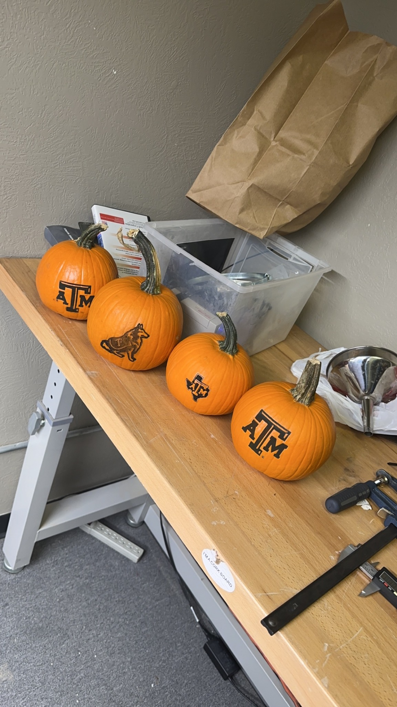
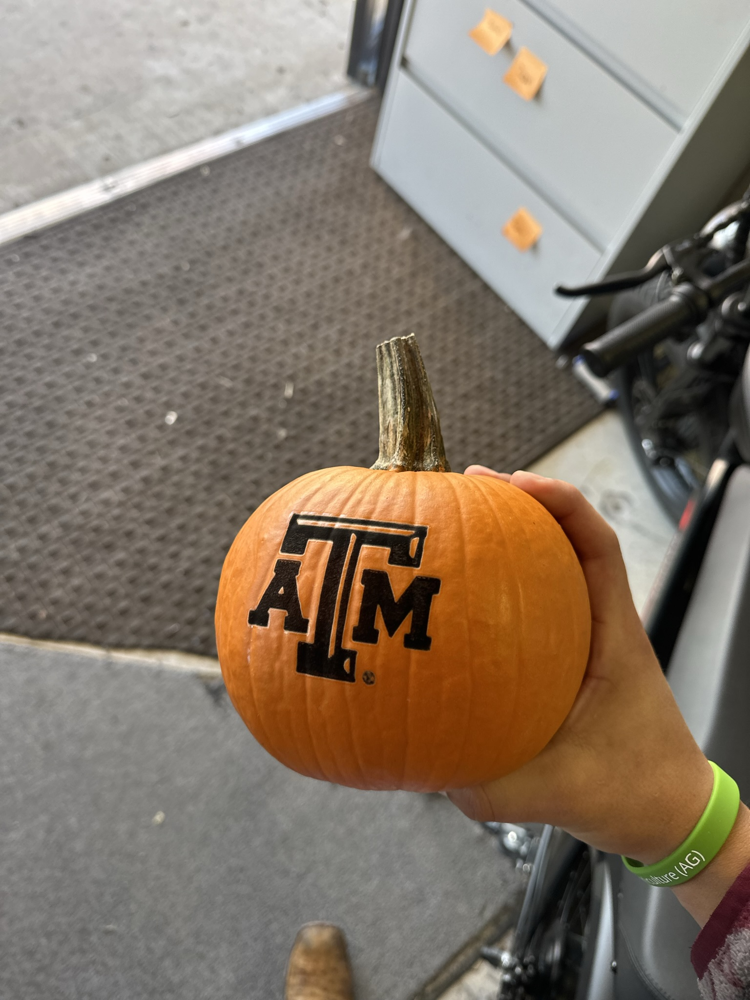
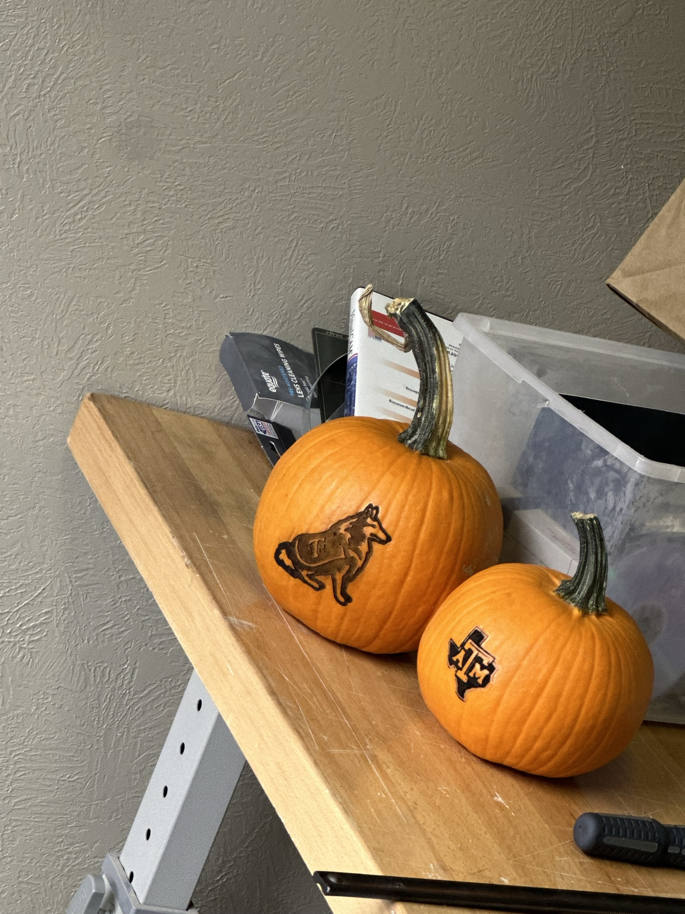
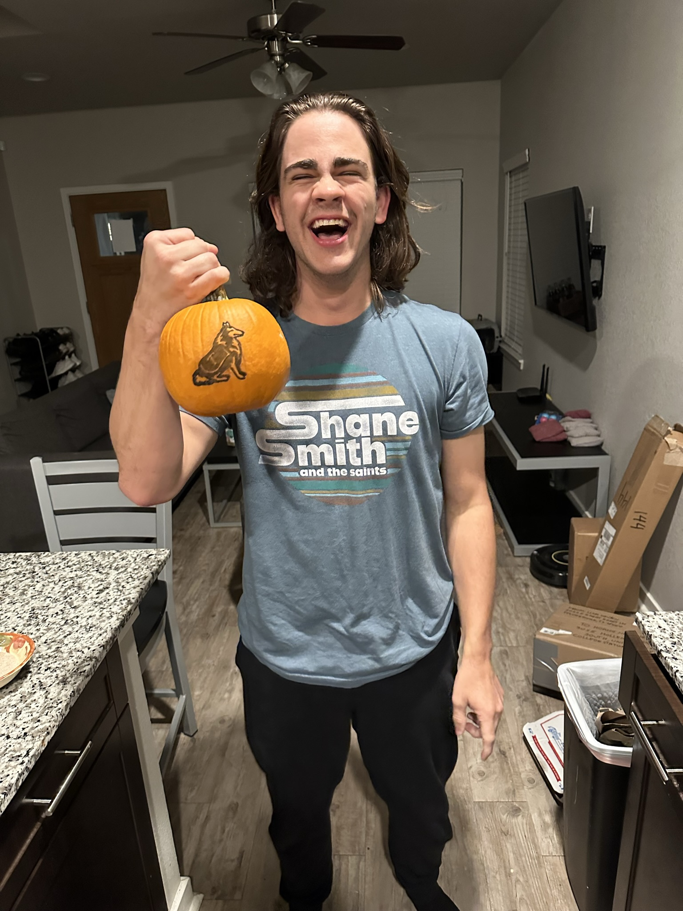

Project Overview
For Halloween 2023, I laser-engraved Texas A&M and Reveille graphics onto a group of miniature pumpkins and gave the finished pieces to friends.
I used Meercat software to prepare and run the engraving work. This was a small project, but it is a good example of using digital fabrication equipment for a quick idea-to-finished-part build.
Tools & Processes
Laser Engraving · Meercat · Digital Fabrication · Graphic Preparation